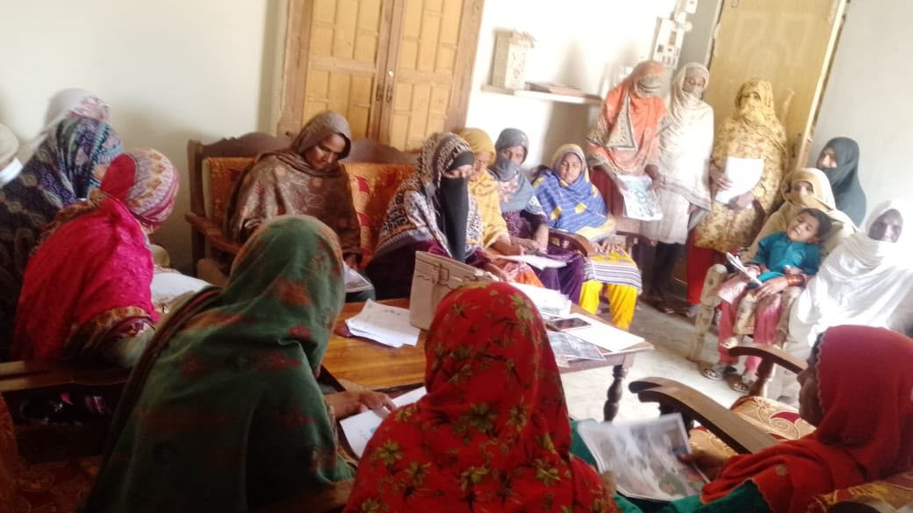
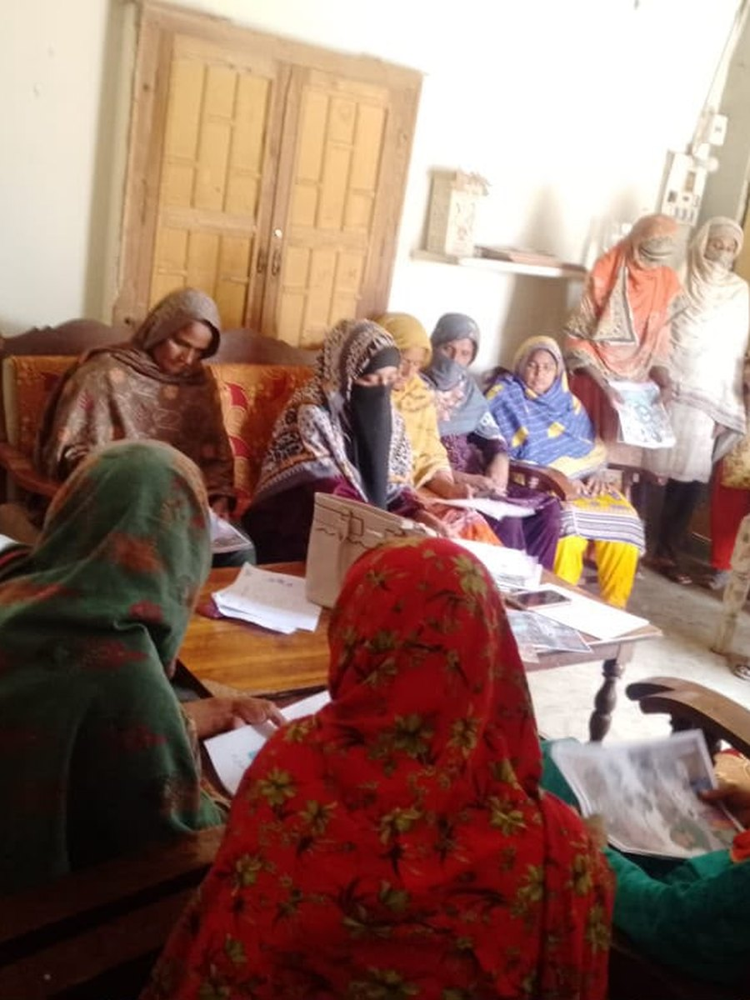
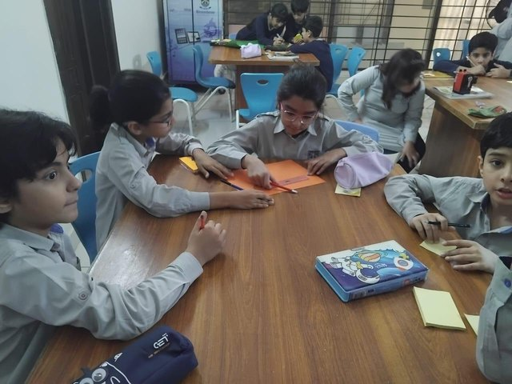
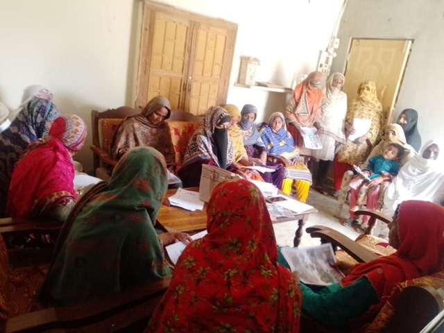
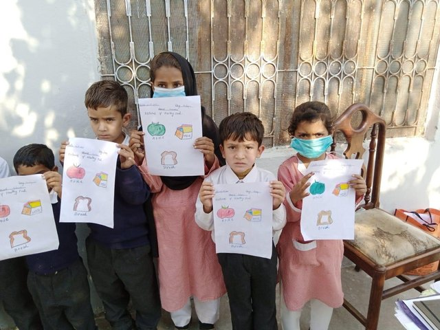
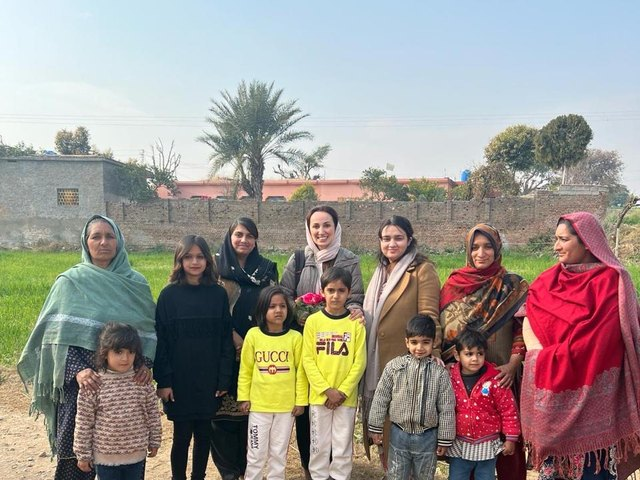

 TorchbearerSustainability · Inclusion · Impact
TorchbearerSustainability · Inclusion · Impact
Verification infrastructure for the social sector

TorchbearerSustainability · Inclusion · Impact
Verification infrastructure for the social sector
What we do
Plenty of organisations can do the first two. The third one is scarce, and it is the one that regulators, funders and disclosure rules are all converging on.
 Torchbearer
TorchbearerThe problem
The Kingdom hit its 2030 volunteering target six years early and grew the sector's value by roughly nine times.
Every one of those headline figures counts an input. Riyals committed. Organisations registered. Volunteers signed up.
None of them says what changed for anybody. The regulator has now shifted its own strategy from growing the sector to professionalising it.
Sources: National Center for Non-Profit Sector 2025 annual report, via Saudi Press Agency (spa.gov.sa/en/N2321543) and Arab News (arabnews.pk/node/2649855). Vision 2030, National Center for Non-Profit Sector Strategy. Bars scaled within each pair.
TorchbearerWhy now
Environmental commitments already carry numbers. Social commitments do not. As ISSB-aligned standards move through SOCPA and assurance gets closer, every organisation running social programmes for a Saudi corporate is about to be asked a question it cannot currently answer.
Sources: Saudi Exchange ESG Disclosure Guidelines. Grant Thornton Saudi Arabia, "ESG reporting in Saudi Arabia: preparing for IFRS S1 and S2 adoption". Saudi Green Initiative, greeninitiatives.gov.sa. Vision 2030 National Center for Non-Profit Sector Strategy. No mandatory ISSB adoption date has been confirmed.
TorchbearerThe insight we are betting on
| Pillar | Common unit | What gets reported |
|---|---|---|
| Environmental | tCO₂e | An outcome |
| Governance | Structural facts | Verifiable |
| Social | None | Training hours. People reached. |
Training hours are an input. A policy is an intention. "People reached" is an activity dressed up as a result.
And none of it can be fixed afterwards. A programme that ran for three years without a baseline cannot be given one in year four.
So this is a delivery problem, not a reporting problem. Software alone will not solve it. Software built by people who deliver might.
On the absence of a standardised social metric: Dalberg, "Measuring the S in ESG". Treelynk, "Social KPIs and measurement challenges", on proxy indicators that record activity rather than outcomes.
TorchbearerWhat we are building
A platform that carries a social programme from design through to audit-grade evidence, with the field capability to make the data real rather than assumed.
Design
Programmes built against named SDG targets and Vision 2030 pillars, with baselines and instruments generated before delivery starts, because afterwards is too late.
Deliver
Offline-capable collection through local partners, with attrition and exclusions recorded as they happen rather than reconstructed at the end.
Verify
Raw instruments, method notes and every adjustment, assembled so a third party can rebuild the result without talking to us. Formatted for disclosure.
TorchbearerThe method the product encodes
Establish what is true before designing anything, including an explicit list of what will not be measurable.
A causal chain with an indicator on every link. Nothing is procured until cost per outcome is stated.
Execution through local organisations and locally recruited teams, capturing data as the work happens.
Baseline at intake, endline at a fixed interval, same instrument, same population. Attrition published.
An evidence trail complete enough that a sceptic can disagree with us using our own data.

TorchbearerWhat exists today




TO COMPLETE BEFORE SUBMISSION. Programme figures: districts, dates, participants enrolled, delivery partners, results measured so far. Misk accepts idea and prototype stage, so this is not disqualifying, but one real number is worth more than a page of method.
TorchbearerWhy us
We work in flood-exposed districts of Pakistan, with long supply chains and populations on no distribution list. A method that survives there transfers downwards in difficulty.
Five stages with standards attached, published in full alongside eleven sourced papers. We publish what underperformed. Nobody else in this category does.
In a category whose participants are women and girls, that is an operational advantage before it is anything else. It decides who talks to us at follow-up.
Consultancies write frameworks they have never had to execute. Implementers deliver without measuring. We are building from the only position that produces a working product, which is having done both.
TorchbearerMarket
| Basis | Value | |
|---|---|---|
| Sector | Saudi non-profit sector value, 2024 | SAR 73bn |
| Addressable | If measurement and verification runs at 1 to 3% of programme spend | SAR 0.7 to 2.2bn |
| Adjacent | Listed companies already publishing sustainability reports | 94 |
| Beachhead | Corporates holding a social mandate with no delivery or measurement capability | Entry point |
This is not "social impact measurement" in the abstract. It is a dated obligation landing on a specific set of organisations.
Sector value: National Center for Non-Profit Sector, 2024. Disclosure count: Saudi Exchange reporting via Spectreco analysis. The 1 to 3% band is our own assumption, not a published figure. It is stated so it can be argued with, which is the standard we hold our programme numbers to.
TorchbearerBusiness model
Land
Fixed scope and fixed price: programme design, measurement plan, indicator mapping, cost per outcome. The client can then deliver it with anyone.
Expand
Per-programme subscription to Verify. The recurring line, and the reason this is a venture rather than a consultancy.
Deepen
Full execution through local partners, or independent verification of programmes already running. Higher value, and it keeps the product honest.
The wedge is the design engagement. It is small, quick and it produces the document that makes the platform obviously necessary. Nobody buys measurement software until they have seen what their current numbers cannot survive.
TorchbearerCompetition
| Who | Design | Deliver | Verify | Where it breaks |
|---|---|---|---|---|
| Global consultancies | Yes | No | Partly | Frameworks written by people who never had to execute them |
| Implementing NGOs | Partly | Yes | No | Measurement designed after delivery, so it cannot be repaired |
| ESG reporting software | No | No | Partly | Aggregates whatever it is given. Cannot fix a missing baseline |
| Assurance firms | No | No | Yes | Arrive at the end, when the evidence either exists or does not |
| Torchbearer | Yes | Yes | Yes | Built outwards from field delivery, which is the only order that works |
The defensible part is not the software. It is that the software encodes a method proven in the hardest delivery conditions we could find, and that we keep delivering, so it stays true.
TorchbearerGo to market
Eleven sourced papers on exactly the problems our buyers have, already public and already indexed.
Four questions applied to a prospect's existing impact report. It reliably fails, using material they published themselves.
Fixed price, weeks rather than months, and it produces the artefact that makes the platform necessary.
It is the proving ground. Delivery economics there make rigorous measurement affordable at a scale where it would otherwise be a luxury.
TorchbearerThe ten weeks
| Phase | Weeks | What we do | Deliverable |
|---|---|---|---|
| Ideate | 1 to 3 | Validate the measurement gap with 25 or more Saudi buyers across corporates, non-profits and funds. Test whether they will pay to fix it, and at what price. | Validated problem and pricing |
| Build | 4 to 7 | MVP of the indicator builder and evidence-pack generator, tested against a live Maahwari dataset rather than a synthetic one. | Working MVP |
| Test to sell | 8 to 9 | Run the free diagnostic with named prospects. Convert two into paid design engagements. | First paying customers |
| Grow | 10 plus | MISA licensing route, Saudi entity, and a sales motion we can repeat. | In market |
We are applying at the right stage. The method is finished and public. The product is not built. That is what a pre-accelerator is for, and we are not pretending otherwise.
TorchbearerTeam
Founder, Torchbearer
Torchbearer is women-led from the founder to the field teams who run the sessions and collect the follow-up data.
In a category whose participants are women and girls, that is why we can collect data other organisations cannot, and why our follow-up response rates hold.
TO COMPLETE. Founder biography: background, relevant experience, and why this problem. Add any co-founders or core team. Misk states a preference for two to three co-founders, though solo founders are eligible.
Torchbearer
TorchbearerSustainability · Inclusion · Impact